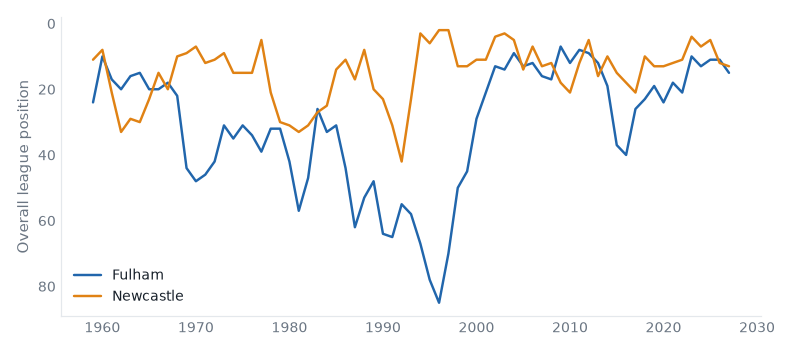
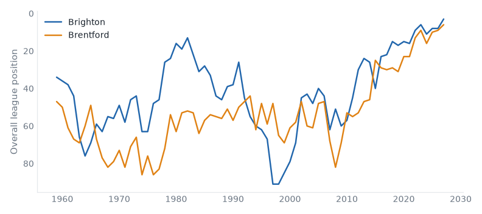
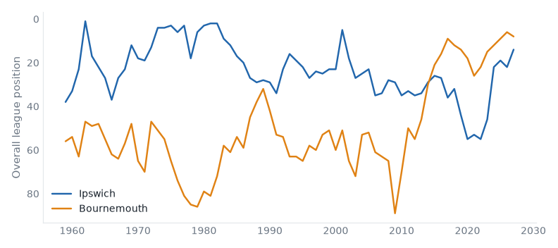
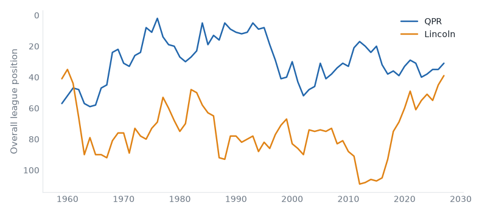

22 fixtures across 2 divisions, week of 06 November 2026.
| Mon | Newcastle | 0–1 | Everton |
| Tue | Birmingham | 3–0 | Millwall |
| Tue | Blackburn | 1–2 | Stoke |
| Tue | Charlton | 0–1 | Bolton |
| Tue | Derby | 0–4 | Norwich |
| Tue | Portsmouth | 3–1 | Swansea |
| Tue | Preston | 2–3 | Sheffield United |
| Tue | QPR | 1–1 | Burnley |
| Tue | Watford | 1–0 | Lincoln |
| Tue | West Brom | 1–1 | Southampton |
| Wed | Bristol City | 1–2 | Wolves |
| Wed | Cardiff | 3–3 | West Ham |
| Wed | Wrexham | 2–0 | Middlesbrough |
| Tue | Huddersfield | 1–1 | Luton |
| Tue | Wigan | 0–0 | Mansfield |
| Wed | Oxford | 2–0 | Reading |
| Tue | Northampton | 0–1 | Oldham |
Fulham host Newcastle in the Premier League on Saturday 07 November. Fulham live between the Premier League and the Championship; they are 5 seasons into a spell 1 division above that; they sit 15th with 9 points from 9 games, form DWWLD. Newcastle United belong in the Premier League — 77% of their 69 recorded seasons; they sit 13th with 11 points from 9 games, form LWLLW. They have met 56 times in league play since 1959/60: Fulham 24 wins, Newcastle United 22, 10 drawn.

|
|
Brighton host Brentford in the Premier League on Sunday 08 November. Brighton & Hove Albion are, on the balance of their record, a Championship club; they are 10 seasons into a spell 1 division above that; they sit 3rd with 19 points from 9 games, form WLWWW. Brentford live between League One and League Two; they are 6 seasons into a spell 2 divisions above that; they sit 6th with 14 points from 9 games, form WDLDW. They have met 38 times in league play since 1965/66: Brighton & Hove Albion 15 wins, Brentford 12, 11 drawn.

|
|
Ipswich host Bournemouth in the Premier League on Sunday 08 November. Ipswich Town live between the Premier League and the Championship; this season is their highest since 2025; they sit 14th with 11 points from 9 games, form DDLWL. Bournemouth live between League One and League Two; they are 5 seasons into a spell 2 divisions above that; they sit 8th with 12 points from 9 games, form WWWLL. They have met 12 times in league play since 1987/88: Ipswich Town 2 wins, Bournemouth 4, 6 drawn.

|
|
Arsenal v Hull
Sat 07 Nov · above level compare
Arsenal 1st (WWWWL), Hull City 11th (DDLDL). At least one of them sits above where their record says they belong.
Leeds v Tottenham
Sat 07 Nov · neighbours compare
Leeds United 12th (LDDLD), Tottenham Hotspur 9th (WWWDL). Three places or fewer between them.
Crystal Palace v Liverpool
Sun 08 Nov · above level compare
Crystal Palace 18th (LLLWD), Liverpool 5th (LWWLW). At least one of them sits above where their record says they belong.
Sunderland v Chelsea
Sun 08 Nov · above level compare
Sunderland 20th (LDLLL), Chelsea 4th (WLWWL). At least one of them sits above where their record says they belong.
| Fri 06 | Everton v Coventry | yo-yo club | compare |
| Sat 07 | Nott'm Forest v Man City | yo-yo club | compare |
| Sun 08 | Man United v Aston Villa | compare |
QPR host Lincoln in the Championship on Saturday 07 November. Queens Park Rangers live between the Premier League and the Championship; they sit 11th with 21 points from 14 games, form DLWLW. Lincoln City live between League One and League Two; this season is their highest since 1961; they sit 19th with 15 points from 14 games, form LLWDL. They have met 2 times in league play since 1961/62: Queens Park Rangers 1 wins, Lincoln City 1, 0 drawn.

|
|
Birmingham v Swansea
Sat 07 Nov · above level compare
Birmingham City 4th (WWLWW), Swansea City 6th (LWLLW). At least one of them sits above where their record says they belong.
Bristol City v Norwich
Sat 07 Nov · neighbours compare
Bristol City 15th (LWDLL), Norwich City 12th (WWWLL). Three places or fewer between them.
West Brom v Millwall
Sat 07 Nov · below level compare
West Bromwich Albion 7th (DWDWW), Millwall 13th (LWLDL). At least one of them sits below where their record says they belong.
Wrexham v Wolves
Sat 07 Nov · 2 above level compare
Wrexham 16th (WLLWL), Wolverhampton Wanderers 3rd (WWWDW). At least one of them sits above where their record says they belong.
| Fri 06 | Derby v Bolton | promoted last season | compare |
| Sat 07 | Blackburn v West Ham | below level | compare |
| Sat 07 | Cardiff v Burnley | promoted last season | compare |
| Sat 07 | Charlton v Sheffield United | yo-yo club | compare |
| Sat 07 | Portsmouth v Stoke | yo-yo club | compare |
| Sat 07 | Preston v Southampton | below level | compare |
| Sat 07 | Watford v Middlesbrough | compare |
Reviewed on Monday review, tiers 1–2 and Tuesday review, tiers 3–5.
Built from the English football database, tiers 1–5 from 1958/59. Results from football-data.co.uk. Archived copy.